the app will provide

Key Conservation is helping conservationists gain critical funding and global support through a mobile app (in development) that provides real-time updates on day-to-day campaigns.
Conservation organizations all over the world are working tirelessly to stop extinction but they need our help.
We are wildlife biologists who saw a massive disconnect in the way we could reach out for real-time global support for critical needs outside our project's budget. We also didn't know where to turn to get help from skilled professionals and needed a better way to connect with our communities about real-time volunteer opportunities and events.
Additionally, supporters of conservation shared that they wanted new ways to get involved, like sharing their skills, more transparency as to exactly where their money is going, better ways to stay connected with what is happening in the field and feedback on how their individual support made a difference. We knew conservation organizations all over the world needed more support so we decided to do something about it by creating the Key Conservation app.
The Key App will have a scrolling live feed that updates as needs from conservationists occur around the world in real-time. Supporters will be transported to the front lines alongside our conservationists and be given actionable steps they can take to make a real difference right then and there.
 

The Skilled Impact feature enables supporters to give their professional skills to help conservation organizations. For example, a graphic designer could help design an outreach campaign, a mechanic could help fix a patrol vehicle or a drone operator could assist with collecting data on a remote study area.
Tapping into these skills empowers supporters to share their expertise and experience with conservationists that need them to take their mission to the next level. Our hope is that sharing skills will help create a community around the work being done as well as a lifelong connection between an individual and a conservation organization.
The Skilled Impact feature enables supporters to give their professional skills to help conservation organizations. For example, a graphic designer could help design an outreach campaign, a mechanic could help fix a patrol vehicle or a drone operator could assist with collecting data on a remote study area.
Tapping into these skills empowers supporters to share their expertise and experience with conservationists that need them to take their mission to the next level. Our hope is that sharing skills will help create a community around the work being done as well as a lifelong connection between an individual and a conservation organization.

The Skilled Impact feature enables supporters to give their professional skills to help conservation organizations. For example, a graphic designer could help design an outreach campaign, a mechanic could help fix a patrol vehicle or a drone operator could assist with collecting data on a remote study area.
Tapping into these skills empowers supporters to share their expertise and experience with conservationists that need them to take their mission to the next level. Our hope is that sharing skills will help create a community around the work being done as well as a lifelong connection between an individual and a conservation organization.